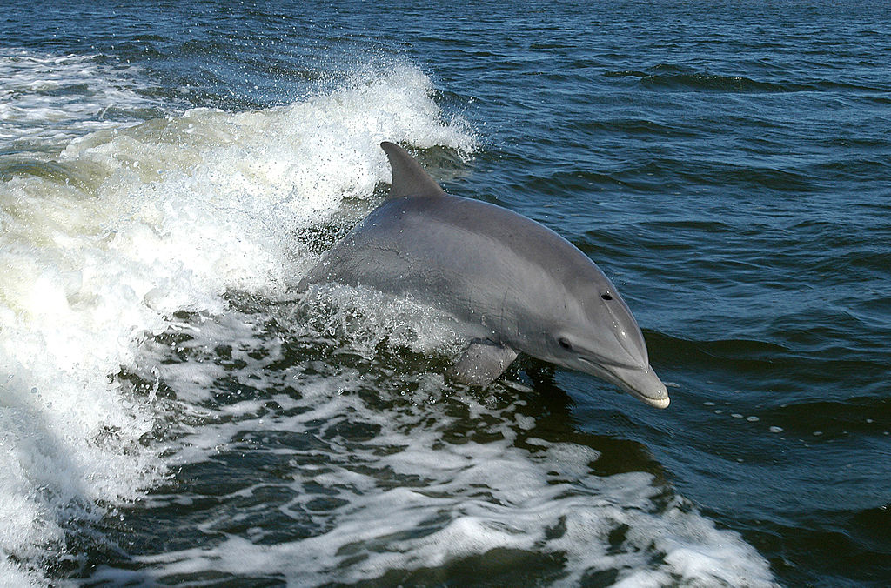

Apresentação ?
Sim,uma apresentação, currículos geralmente contém informações acadêmicas, registros de trabalhos passados e eles também são formais.
Um pouco sobre o escritor
Registrado como Juliano Eiki Yokoyama, está cursando o terceiro ano (2020) de informática integrado ao ensino médio no Instituto Federal de Educação, Ciência e Tecnologia São Paulo (IFSP), gosta de golfinhos e matemática.
Golfinhos
O mundo pressiona Juliano a ser rico, mas ele não quer. Um de seus objetivos é ajudar os golfinhos, animais muito inteligentes que costumam ser utilizados como atrações em zoológicos, como ele pretende resolver esse problema ainda é um mistério.
Imagen retirada de http://mediaarchive.ksc.nasa.gov/detail.cfm?mediaid=21807
Matemática
A matemática é odiada por muitas pessoas, os motivos ainda são um mistério para a ciência, mas isso deve acabar. Para Juliano a matemática é a unica prova de nossa existência, e ele pretende um dia desvender com ela parte do mistério da vida.